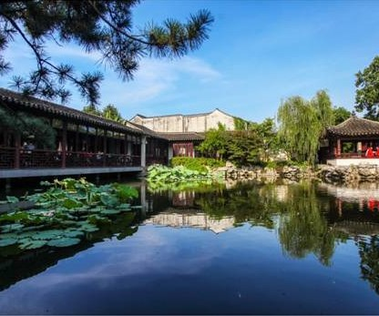

|

|
Yi Garden
/The Garden if Cultivation
Opening hour: 7:30AM-4:30PM(10/15-3/31); 7:30AM-5PM(4.1-10.14)
Price: 10 Yuan
Address: No.5 Wenya Street, Gusu, Suzhou
Contact: 0512-67271614
Yi garden was built in the Ming Dynasty, built by Yuan Zugeng, the
initial name of "drunk Yingtang". Because the garden is full of herbs,
it was renamed "medicine garden". In the late Ming and early Qing
dynasties, Jiang CAI owned it and changed it to "Jingting Shanfang",
and his son, Jiang Shijie, changed his name to "Yi Pu". In 1995, it
was listed as a cultural relic protection unit of Jiangsu Province,
and in 2000, it was listed as a World Cultural Heritage by UNESCO. Yi
garden style natural plain, preserve Ming dynasty garden regulations
more. The whole garden has land of only 5 mu, with about one-fifth of
the pool water as the center. In the north of the pool, there are many
buildings. Boya Hall is the main hall in the garden. The south of the
pool for rockery, mound into, near the water, is stacked into cliff,
dangerous path lake stone, both more changes and more natural. In the
east of the pool, there is a milk fish pavilion, which is a Ming
Dynasty relic. In the west of the pool, there is the courtyard of Qin
Lu, which is separated and connected with other scenic spots by the
round hole door. Stepping into the gate of the courtyard, you can see
that there is a small pool in the courtyard, which seems to be
connected with a large pool. This is an isolated example in suzhou
gardens.
|